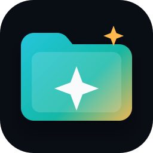
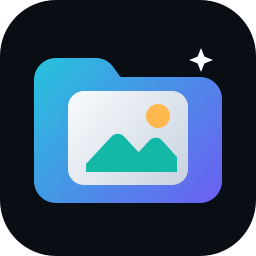
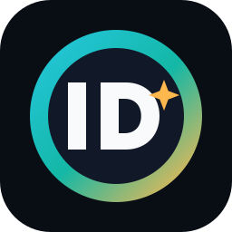
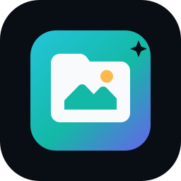

01 - Pasta com brilho
Mais próxima da logo atual. Fica amigável e comunica personalização.
Escolha uma direção visual. Depois eu converto a opção escolhida para .ico, aplico no app e refaço o ZIP.

Mais próxima da logo atual. Fica amigável e comunica personalização.

A mais literal: mostra que o app transforma imagens em ícones de pasta.

Mais institucional, bom se você quiser reforçar a marca da IntelligentDevSolutions.

Visual de utilitário desktop, forte em tamanho pequeno na barra de tarefas.
Simples, limpo e bem legível quando o ícone aparece pequeno.